Blanco - Amaka
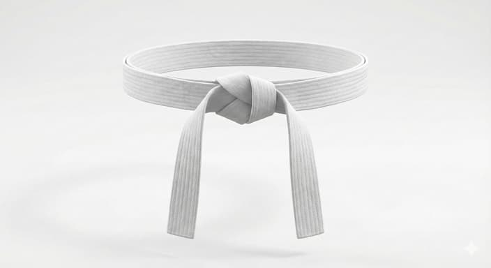
Cinta blanca
Representa la pureza debido a la falta de entendimiento a lo desconocido.
El Lima Lama es mucho más que golpes y patadas; es un sistema de defensa personal polinesio que equilibra la fluidez del movimiento natural con la contundencia del combate real.
Nacido de la tradición samoana y adaptado a la realidad urbana, este arte marcial busca la preservación de la vida y el desarrollo del carácter. No aprendemos a pelear para lastimar, sino para proteger.
Conoce nuestro origen y legado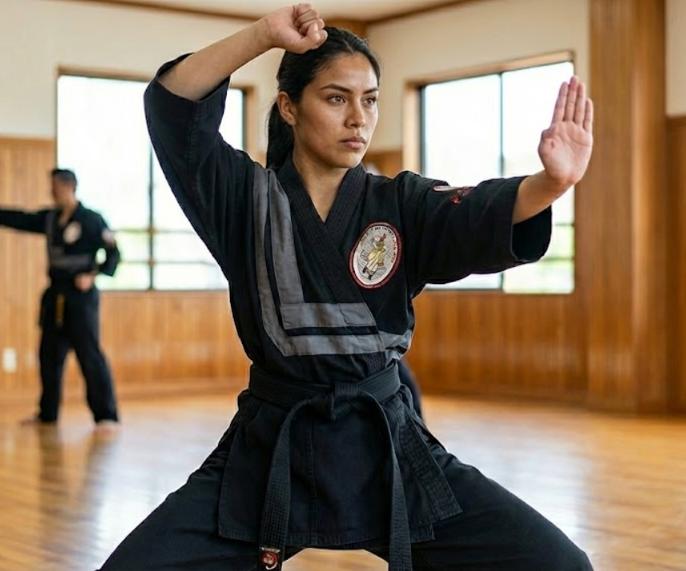
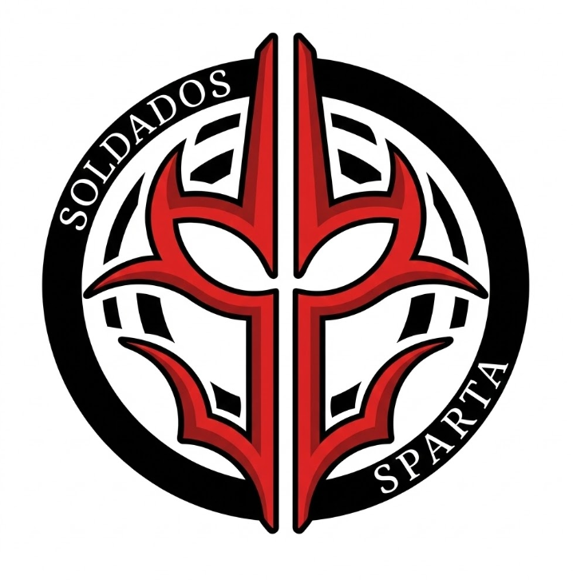
Maestro Jesus Leos
C. C.D.P., Subestación CFE, 31137 Chihuahua, Chih.
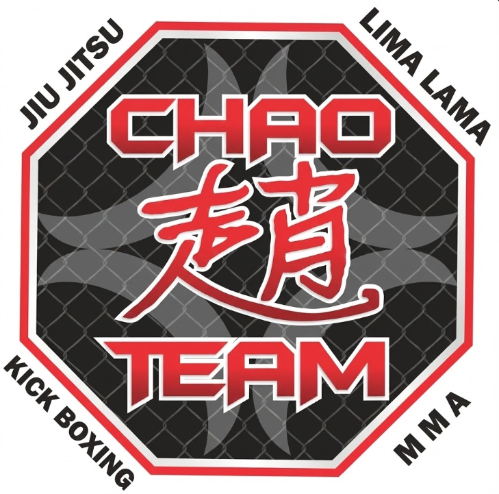
Maestro Adrian Chao
Av. Tecnológico 2906, Tecnológico, 31200 Chihuahua, Chih.

Maestro Pedro Zapata
C. 26a 5013, Dale, RUTA SUR II, 31050 Chihuahua, Chih.
Maestro Erick Portillo
C. Onceava 1024, Villa Juárez, 31064 Chihuahua, Chih.
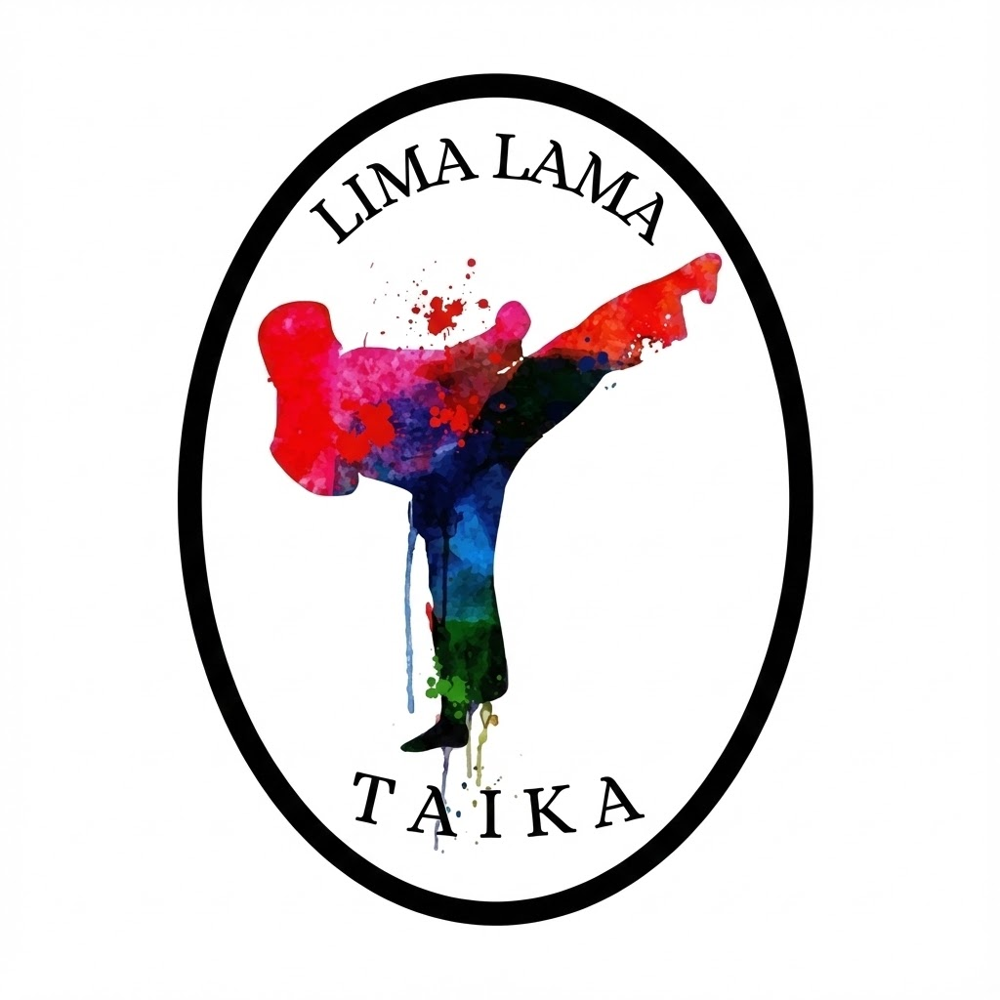
Maestro Jose Acosta
C. Carlos Greene 3505, José María Ponce de León, Quintas Carolinas, 31136 Chihuahua, Chih.
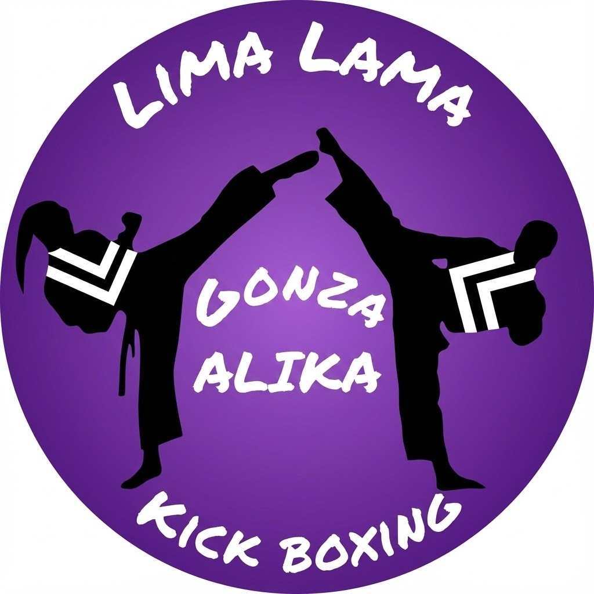
Maestra Cinthia Gonzales
31376, Av Palestina 9511, Tabalaopa, Chih.

Representa la pureza debido a la falta de entendimiento a lo desconocido.
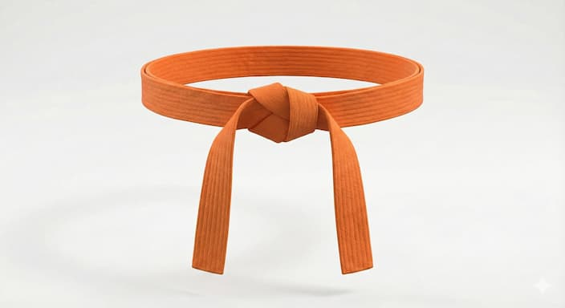
Es la primera enseñanza
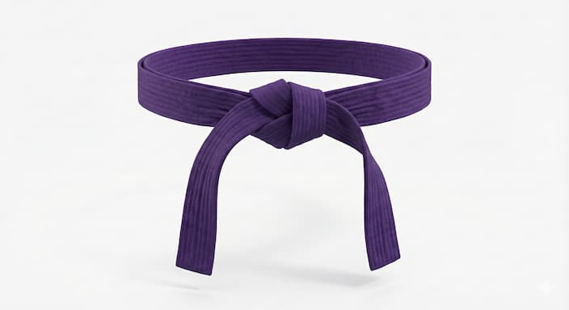
La brillantes del sol, simboliza comprensibilidad e inteligencia
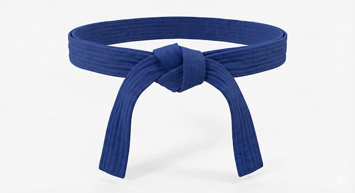
El azul del cielo y su serenidad atmosferica. Simboliza humanidad y tolerancia
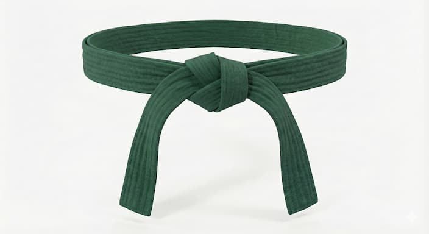
Es el campo, el valle, la montaña y todo lo verde de la naturaleza
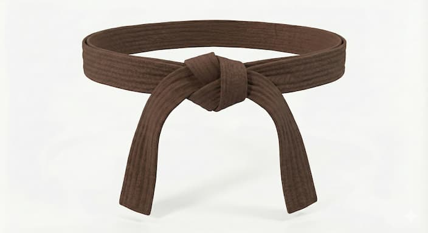
Es el color de union, es el acercamiento entre mente, cuerpo y espiritu
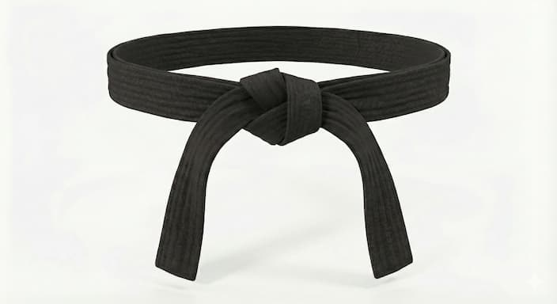
Ceguera del dolor de las palabras que nos hieren o nos ofenden
Lima Lama ofrece un sistema completo que desarrolla habilidades físicas, mentales y espirituales.
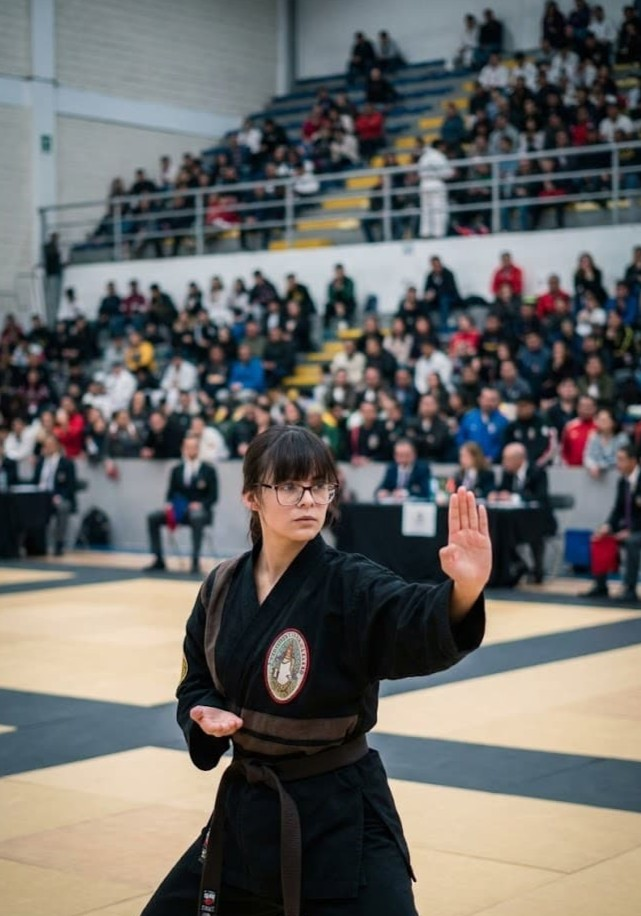
Las formas (katas) en Lima Lama son secuencias coreografiadas de movimientos que representan combates imaginarios contra múltiples oponentes. Cada forma tiene un propósito específico, enseñando principios fundamentales del arte marcial, desarrollando la memoria muscular y perfeccionando la técnica. A través de la práctica repetitiva de las formas, los estudiantes internalizan los movimientos circulares característicos de Lima
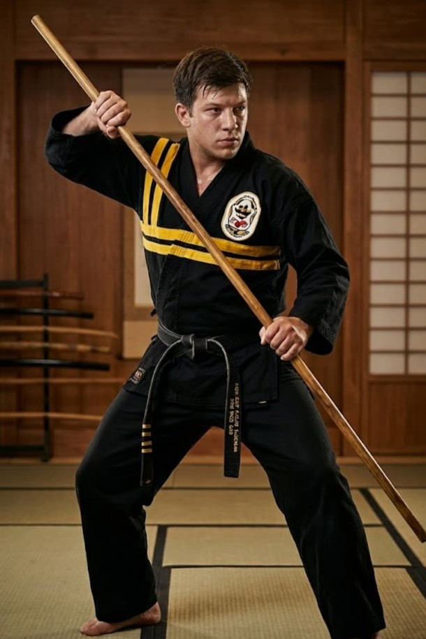
El entrenamiento con armas en Lima Lama incluye el uso de instrumentos tradicionales como bastonesm nunchakus y otros implementos. Este entrenamiento avanzado extiende los principios fundamentales del arte marcial al manejo de armas, desarrollando coordinacion superior, conciencia espacial y control fino. Las formas con armas no solo mejoran las habilidades marciales, sino que tambien profundizan la comprension de distancias, anguloos y
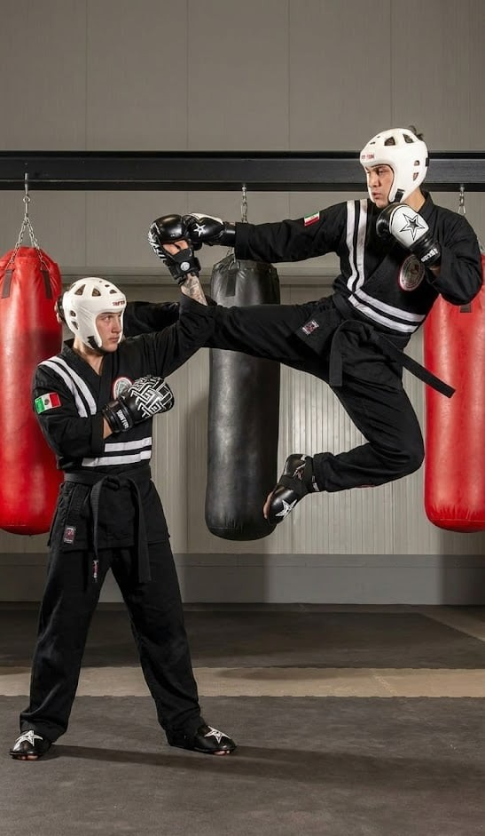
El combate por puntos es una modalidad competitiva donde los participantes demuestran su habilidad tecnica en un ambiete controlado. Se otorggan puntos por golpes limpios, tecnicas bien ejecutadas y control dell oponente. Esta modalidad desarrolla precisio, velocidad de reaccion y estrategia, mientras mantiene la seguridad de los competidores. Es ideal para estudiantes que buscan probar sus habilidades en un entorno deportivo estructurado. participantes demuestran su habilidad técnica en un ambiente controlado.
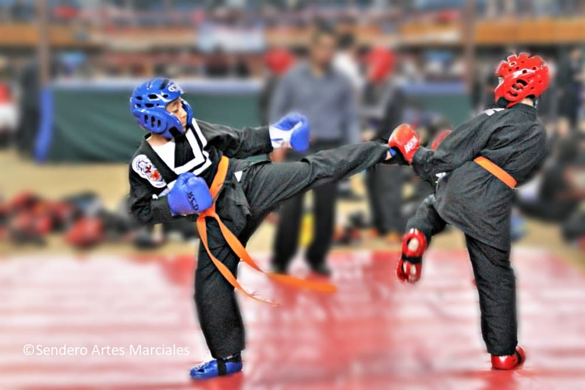
El combate continuo tambien conocido como light contact es un tipo de enfrentamiento que simula condiciones de combate real sin interrupciones. Los practicantes aprenden a mantener su tecnica bajo presion, adaptarse constantemente a las acciones del oponente y desarrollar la resistencia cardiovascular necesaria para enfrentamientos prolongados. Esta modalidad enfatiza el flujo continuo de movimientos circulares caracteriztico de Lima Lama
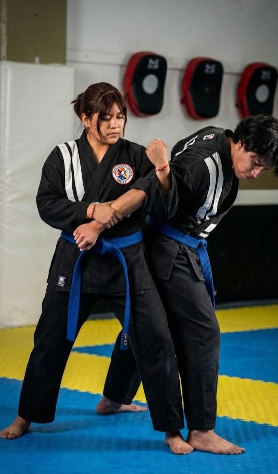
El entrenamiento de defensa personal en Lima Lama se enfoca en tecnicas efectivas y practicas para situaciones reales de peligro. Se enseñan respuestas instintivas a ataques comunes, uso de la biomecanica para maximizar la eficiencia contra oponentes mas grandes, y tecnicas de desarme. Este entrenamiento incluye simulaciones de escenarios realistas, manejo del estres bajo presion y toma de decisiones rapidas, preparando a los estudiantes para protegerse.
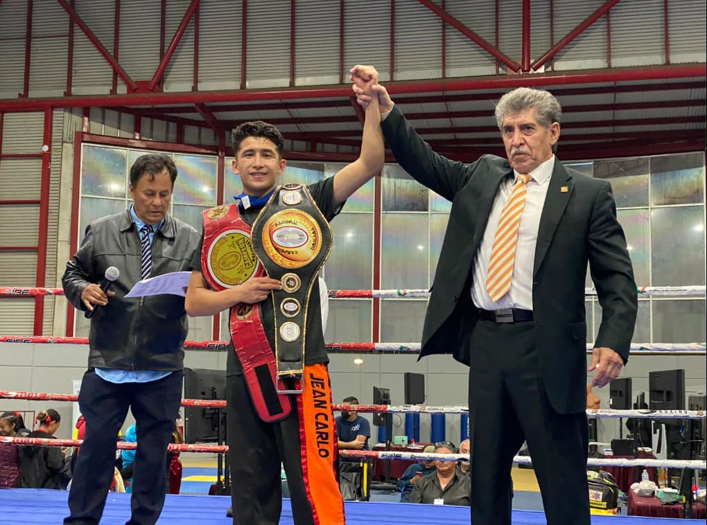
El combate de campeonato representa el mas alto nivel de competencia en Lima Lama, donde los mejores exponentes del arte marcial demuestran sus habilidades frente a jueces certificados y publico. Estos eventos incluyen multiples categorias por edad, peso y nivel de experiencia. Los competidores son evaluados en tecnica, espiritu marcial, control y efectividad. Participar en campeonatos desarrolla disciplina excepcional, manejo de presion y excelencia tecnica.